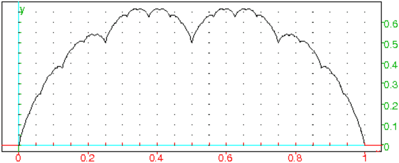

sapin(x,y):={
DispG();
if (abs(x-y)<0.5) {segment(x,y); return 0;}
sapin(x,x+(y-x)*0.5*exp(i));
sapin(x,x+(y-x)*0.5*exp(-i));
segment(x,(3*x+y)/4);
sapin((3*x+y)/4,y);
}
je voulais utiliser similitude mais je n’arrive pas a me debarasser des petites croix qui marque le point..meme en faisant nodisp(similitude(....))
sapinp(x,y):={
DispG();
if (abs(x-y)<0.2) {segment(x,y); return 0;}
sapin(x,affixe(similitude(x,0.5,1.0,y)));
sapin(x,affixe(similitude(x,0.5,-1.0,y)));
segment(x,(3*x+y)/4);
sapin((3*x+y)/4,y);
}:;
Sans utiliser l’écran DispG on met toutes les instructions dans une
séquence.
On tape :
sapin(z0,z1):={
local L,v;
L:=NULL;
v:=z1-z0;
si abs(v)<0.5 alors L:=L, segment(z0,z1);retourne L; fsi;
L:=L,sapin(z0+v/4,z1);
L:=L,segment(z0,z0+v*0.25);
L:=L,sapin(z0,z0+v*exp(i*pi/6.)*0.5);
L:=L,sapin(z0,z0+v*exp(-i*pi/6.)*0.5);
}:;
ou
sapin1(z0,z1,t):={
local L,v;
L:=NULL;
v:=z1-z0;
si abs(v)<0.5 alors L:=L, segment(z0,z1);retourne L; fsi;
L:=L,sapin1(z0+v/4,z1,t);
L:=L,segment(z0,z0+v*0.25);
L:=L,sapin1(z0,z0+v*exp(i*t)*0.5,t);
L:=L,sapin1(z0,z0+v*exp(-i*t)*0.5,t);
}:;
fleur(x,y):={
DispG();
if (abs(x-y)<0.5) {segment(x,y);cercle(y,(y-x)*0.3); return 0;}
segment(x,y);cercle(y,(y-x)*0.3);cercle(y,(y-x)*0.2);
fleur(x,x+(y-x)*0.5*exp(i*0.5));
fleur(x,x+(y-x)*0.5*exp(-i*0.5));
}
On tape :
fleur(0,5*i)
On obtient le dessin dans DispG.
anemone(a,n,c):={
local L;
L:=NULL;
L:=L,cercle(a+i*n,n);
L:=L,cercle(a-i*n,n);
L:=L,cercle(a+n,n);
L:=L,cercle(a-n,n);
retourne affichage(L,c+rempli),cercle(a,n/2,affichage=rempli+0);
}:;
On tape :
anemone(0,5*i)
On obtient
tulipe(a,n,c):={
local L;
L:=L,cercle(a+i*n,n,3.15,6.4);
L:=L,cercle(a+i*n-n,n,-0.1,1.58);
L:=L,cercle(a+i*n+n,n,1.58,3.15);
L:=L,segment(a+i*n-n,a+2*i*n-n);
retourne affichage(L,c+rempli);
}:;
On tape :
tulipe(0,5*i)
On obtient
Ici on veut avoir le dessin comme réponse, on met donc toute la suite des
instructions graphiques dans une liste L qui sera retournée comme
réponse.
On tape pour avoir un bouquet d’anémones:
fleurs1(x,y):={
local L,c;
L:=NULL;
c:=alea(10)+85;
if (abs(x-y)<0.5) {return L,arc(x,y,-5*pi/12,affichage=epaisseur_ligne_3),anemone(y,(y-x)*0.3,c); }
L:=arc(x,y,-5*pi/12,affichage=epaisseur_ligne_3),anemone(y,(y-x)*0.2,c);
L:=L,fleurs1(x,x+(y-x)*0.5*exp(i*0.5));
L:=L,fleurs1(x,x+(y-x)*0.5*exp(-i*0.5));
retourne L;
}:;
On tape :
fleurs1(0,5*i)
On tape pour une carte de "bonne annee":
fleurs1(0,5*i),fleurs1(0,4+4*i),legende(10+5i,"BONNE "),
legende(10+3i,"ANNEE"),legende(10.2+i,"2011")
On tape pour avoir un bouquet de tulipes:
fleurs3(x,y):={
local L,c;
L:=NULL;
c:=alea(10)+85;
if (abs(x-y)<0.5) {return L,arc(x,y,-5*pi/12,affichage=epaisseur_ligne_3),tulipe(y,(-i)*(y-x)*(0.5)*exp(-i*5*pi/24),c);}
L:=arc(x,y,-5*pi/12,affichage=epaisseur_ligne_3),tulipe(y,-i*(y-x)*(0.4)*exp(-i*5*pi/24),c);
L:=L,fleurs3(x,x+(y-x)*0.6*exp(i*0.5));
L:=L,fleurs3(x,x+(y-x)*0.6*exp(-i*0.5));
retourne L;
}:;
On tape :
fleurs3(0,5*i)
On tape pour une carte de "bonne annee":
fleurs3(0,5*i),fleurs3(0,3+4*i),fleurs3(0,-3+4*i),legende(10+7i,"BONNE "),
legende(10+5i,"ANNEE"),legende(10.2+3i,"2011")
On tape :
fleurs3(0,5*i),fleurs3(0,3+4*i),fleurs1(14,14+6*i),fleurs1(14,19+6*i),
legende(8.2+7i,"BONNE "),legende(8.2+5i,"ANNEE"),legende(8.4+3i,"2011")
Ce n’est pas un dessin récursif, mais c’est une une suite d’itérées.
Pour obtenir cette fougère, on va itérer un système de fonctions avec
poids aléatoires.
On considère :
A:=[[0,0,0.5],[0,0.16,0],[0,0,1]] de poids 0.01,
B:=[[0.2,-0.26,0.4],[0.23,0.22,0.005],[0,0,1]] de poids 0.07,
C:=[[-0.15,0.28,0.57],[0.26,0.24,-0.12],[0,0,1]] de poids 0.07,
D:=[[0.85,0.04,0.08],[-0.04,0.85,0.18],[0,0,1]] de poids 0.85,
On définit F:=A,B,C,D et on itère en partant du vecteur
w0:=[0,5,1]. Pour définir w1, on applique à w0, soit
A, soit B, soit C ou D de façon aléatoire selon
leur poids et on définit w2 etc...On dessine les points définit par
les 2 premières coordonnées des w, mais, pour la beauté du dessin,
on ne dessine pas les n1 premiers points. Donc dans fougere on a n1
points invisibles et n2 itérations .
On tape :
choisirk():={
local r,p,k;
p:=[0.01,0.07,0.07,0.85];
r:=rand(0,1);
k:=0;
tantque r>p[k] faire
r:=r-p[k];
k:=k+1;
ftantque;
return k;
}:;
fougere1(n1,n2):={
local A,B,C,D,F,j,k,w,P;
A:=[[0,0,0.5],[0,0.16,0],[0,0,1]];
B:=[[0.2,-0.26,0.4],[0.23,0.22,0.005],[0,0,1]];
C:=[[-0.15,0.28,0.57],[0.26,0.24,-0.12],[0,0,1]];
D:=[[0.85,0.04,0.08],[-0.04,0.85,0.18],[0,0,1]];
F:=A,B,C,D;
w:=[0,5,1];
P:=NULL;
pour j de 1 jusque n1 faire
w:=F[choisirk()]*w;
fpour;
pour j de n1+1 jusque n2 faire
w:=F[choisirk()]*w;
P:=P,point(w[0],w[1]);
fpour;
return P;
}:;
On tape :
affichage(2+point_point);fougere1(10,10000)
On obtient :

Une application affine f de ℝ2 dans ℝ2 est définie par une matrice carrée A de dimension 2 et par un vecteur colonne U de de ℝ2, on a :
f(X)=A*X+U pour tout vecteur colonne X de ℝ2.
Pour faire cette nouvelle fougère, on fera comme précédemment les
itérées d’un point (ici l’origine) en utilisant l’une des 4 applications
affines de ℝ2 dans ℝ2 avec une probabilité donnée :
On tape :
choisirk():={
local r,p,k;
p:=[0.01,0.07,0.07,0.85];
r:=rand(0,1);
k:=0;
tantque r>p[k] faire
r:=r-p[k];
k:=k+1;
ftantque;
return k;
}:;
fougere2(n):={
local A,A1,A2,A3,A4,U,U1,U2,U3,U4,j,k,P,w;
A1:=[[0,0],[0,0.16]];
U1:=[0,0];
A2:=[[-0.15,0.28],[0.26,0.24]];
U2:=[0,0.44];
A3:=[[0.2,-0.26],[0.23,0.22]];
U3:=[0,1.6];
A4:=[[0.85,0.04],[-0.04,0.85]];
U4:=[0,1.6];
A:=A1,A2,A3,A4;
U:=U1,U2,U3,U4;
w:=[0,0];
P:=NULL;
pour j de 1 jusque n faire
k:=choisirk();
w:=A[k]*w+U[k];
P:=P,point(w[0],w[1]);
fpour;
return P;
}:;
On tape :
affichage(2+point_point);fougere2(3000)
On obtient :
 Remarque
Ces 2 fougères sont sensiblement les mêmes : la première est décrite en
coordonnèes homogènes. Voici le programme fougere3
de la fougère2 en coordonnèes homogènes. Ce programme est un peu plus lent
Remarque
Ces 2 fougères sont sensiblement les mêmes : la première est décrite en
coordonnèes homogènes. Voici le programme fougere3
de la fougère2 en coordonnèes homogènes. Ce programme est un peu plus lent
choisirk():={
local r,p,k;
p:=[0.01,0.07,0.07,0.85];
r:=rand(0,1);
k:=0;
tantque r>p[k] faire
r:=r-p[k];
k:=k+1;
ftantque;
return k;
}:;
fougere3(n):={
local A,A1,A2,A3,A4,j,k,P,w;
A1:=[[0,0,0],[0,0.16,0],[0,0,1]];
A2:=[[-0.15,0.28,0],[0.26,0.24,0.44],[0,0,1]];
A3:=[[0.2,-0.26,0],[0.23,0.22,1.6],[0,0,1]];
A4:=[[0.85,0.04,0],[-0.04,0.85,1.6],[0,0,1]];
A:=A1,A2,A3,A4;
w:=[0,0,1];
P:=NULL;
pour j de 1 jusque n faire
k:=choisirk();
w:=A[k]*w;
P:=P,point(w[0],w[1]);
fpour;
return P;
}
:;
Soit la suite de fonctions fn de [0;1] dans ℝ définie par :
pour n=1 :
| f1(x)= | ⎧ ⎪ ⎪ ⎪ ⎨ ⎪ ⎪ ⎪ ⎩ |
|
et pour n≥ 2 :
| fn(x)= | ⎧ ⎪ ⎪ ⎪ ⎨ ⎪ ⎪ ⎪ ⎩ |
|
La fonction fn est périodique de période 1/2n−1 et tracer son graphe sur [0; 1/2n−1].
f(n,x):={
si x<=1/2 alors
si n==1 alors return x;sinon return f(n-1,2x)/2; fsi;
fsi
si n==1 alors return 1-x;sinon return f(n,x-1/2); fsi;
}:;

S(n,x):={
local j,s;
pour j de 1 jusque n faire
s:=s+f(j,x);
fpour;
return s;
}:;
chouxfleur(A,B,n):={
local xa,ya,xb,yb,xc,yc,C;
si n==0 alors return segment(A,B);fsi;
xa,ya:=coordonnees(A);
xb,yb:=coordonnees(B);
xc:=(xa+xb)/2;
yc:=(ya+yb)/2+(xb-xa)/2;
C:=point(xc,yc);
return chouxfleur(A,C,n-1),chouxfleur(C,B,n-1);
}:;
On tape :
chouxfleur(point(0),point(1),10)
arbre(x,y):={
DispG();
if (abs(x-y)<0.2) {segment(x,y); return 0;}
segment(x,(x+y)/2);
arbre((x+y)/2,(x+y)/2+(y-x)*0.5*exp(i*0.5));
arbre((x+y)/2,(x+y)/2+(y-x)*0.5*exp(-i*0.5));
}
arbre2(x,y):={
DispG();
if (abs(x-y)<0.2) {segment(x,y); return 0;}
segment(x,(x+y)/2);
arbre2((x+y)/2,(x+y)/2+(y-x)*0.5*exp(i*0.5));
arbre2((x+y)/2,(x+y)/2+(y-x)*0.5*exp(-i*0.5));
arbre2((x+y)/2,(x+y)/2+(y-x)*0.5*exp(i));
arbre2((x+y)/2,(x+y)/2+(y-x)*0.5*exp(-i));
}
arbre3(x,y):={
DispG();
if (abs(x-y)<0.2) {segment(x,y); return 0;}
segment(x,(x+y)*0.5);
arbre3((3*x+y)/4,(3*x+y)/4+(y-x)*0.25*exp(i*0.5));
arbre3((3*x+y)/4,(3*x+y)/4+(y-x)*0.25*exp(-i*0.5));
arbre3((x+y)/2,(x+y)/2+(y-x)*0.5*exp(i));
arbre3((x+y)/2,(x+y)/2+(y-x)*0.5*exp(-i));
}
bouquet(x,y):={
DispG();
if (abs(x-y)<0.2) {segment(x,y); return 0;}
segment(x,(x+y)*0.5);
bouquet((3*x+y)/4,(3*x+y)/4+(y-x)*0.25*exp(i*0.5));
bouquet((3*x+y)/4,(3*x+y)/4+(y-x)*0.25*exp(-i*0.5));
bouquet((x+y)/2,(x+y)/2+(y-x)*0.5*exp(i));
bouquet((x+y)/2,(x+y)/2+(y-x)*0.5*exp(-i));
bouquet((x+y)/2,(x+y)/2+(y-x)*0.5);
On modélise la croissance d’un arbre de la manière suivante :
au départ il est composé d’un tronc vertical AB de longueur l, au bout
d’un an ce tronc donne naissance a 2 branches BC et BD vérifiant :
BC=0.5*AB, BD=0.75*AB, et
(BC,BA)=(BA,BD)=5π/6.
Chaque année, chaque branche donne naissance a 2 branches selon le même
processus.
Faire le dessin de l’arbre au bout de 3 ans
Si on ne tient pas compte de la durée de vie de l’arbre, quelle est la
limite de sa taille ?
Avec Xcas on pourra exécuter arbre.xws pour avoir la correction.
Pour faire le dessin on écrit une procédure récursive arbre
qui renvoie 0 quand elle se termine et qui a comme paramètres :
A le point de plantation, l la longueur du tronc AB, t
l’angle que fait AB avec le sol, n le nombre d’années.
Ainsi le point B a comme affixe A+l*exp(i*t).
On verra le dessin dans l’écran DispG (session->montrer->DispG).
arbre(A,l,t,n):={
local B;
B:=A+l*exp(i*t);
segment(A,B);
if (n>0){
arbre(B,l*0.5,t+pi/6,n-1);
arbre(B,l*0.75,t-pi/6,n-1);
}
return 0;
}:;
Pour connaitre la taille de l’arbre au bout de n années, on écrit une procédure récursive harbre qui a les mêmes paramètres que la procédure récursive arbre et qui renvoie l’ordonnée exacte du point le plus haut de l’arbre.
harbre(A,l,t,n):={
local B,res;
B:=A+l*exp(i*t);
res:=max(ordonnee(A),ordonnee(B));
if (n>0){
res:=normal(max(res,harbre(B,l/2,t+pi/6,n-1),
harbre(B,l*3/4,t-pi/6,n-1)));
}
return res;
}:;
ou plutôt pour éviter des calculs trop longs on écrit harbra qui renvoie la valeur approchée de l’ordonnée du point de l’arbre le plus haut. On peut aussi utiliser harbre en mettant comme valeur de l une valeur décimale : par exemple 1.0.
harbra(A,l,t,n):={
local B,res;
B:=evalf(A+l*exp(i*t));
res:=max(ordonnee(A),ordonnee(B));
if (n>0){
res:=max(res,harbre(B,l*0.5,evalf(t+pi/6),n-1),
harbre(B,l*0.75,evalf(t-pi/6),n-1));
}
return res;
}:;
Pour avoir la hauteur de l’arbre, il faut soit planter l’arbre en un point
A d’ordonée 0, soit utiliser la procédure hauteur_arbre
ci-dessous qui suppose que le tronc de l’arbre est vertical :
hauteur_arbre(A,l,n):=harbre(A,l,pi/2,n)-ordonnee(A):;
On tape :
harbre(0,1,pi/2,10)
On obtient au bout de 30s :
(19515*sqrt(3)+52283)/32768
On tape :
harbre(0,1.0,pi/2,1)
On obtient au bout de 5s:
2.62707432586
On tape :
hauteur_arbre(i,1.0,pi/2,1)
On obtient au bout de 5s:
2.62707432586
Seulement, cela ne nous donne qu’une valeur approchée de la limite de cette
hauteur.
Pour connaitre la taille maximum h de l’arbre, il faut remarquer que :
- si l’arbre poussait verticalement sa hauteur serait une série
géométrique de raison 3/4 de somme 4
- la hauteur d’un arbre est proportionnelle à la longueur du tronc initial,
- qu’au bout de 2 ans la branche gauche de la branche droite est verticale et
est de longueur l*3/4*/2=3l/8 c’est à dire que cette branche est de
hauteur les 3h/8.
On calcule à la main la hauteur de l’arbre au bout d’1 an :
l+(√3*l/2)*(3/4)=l(1+3√3/8)
ou on tape :
harbre(0,1,pi/2,1);harbre(0,1.0,pi/2,1);
On obtient :
(3*sqrt(3)+8)/8,1.64951905284
On a donc l’équation :
h=1+(√3/2)*(3/4)+3*h/8
On tape :
solve(h=3/8*h+(1+3*sqrt(3)/8) ,h)
On obtient :
[1/5*(3*sqrt(3)+8)]
On tape :
evalf(1/5*(3*sqrt(3)+8))
On obtient :
2.63923048454
La taille maximum de l’arbre de tronc l est :
l*(3*sqrt(3)+8)/5 ≃ 2.63923048454*l